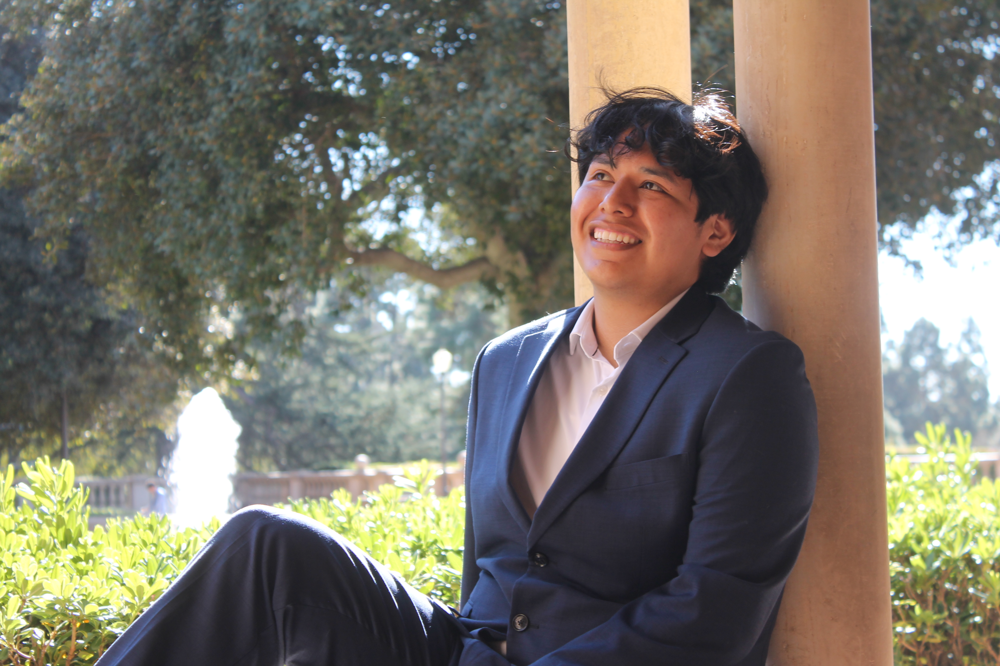

Hello, I am a fourth-year undergraduate student in Linguistics and Psychology at UCLA, currently pursuing my B.A. I hope to pursue a Ph.D. in Linguistics in the near future.
My academic interests include sentence processing, syntax and semantics, bilingualism, predictive processing strategies and the cognition of linguistic representations. More broadly, I am interested in how structural representations shape interpretation during real-time language comprehension and how speakers use syntactic information to guide prediction and reference resolution.
I am currently completing an Honors Thesis under the supervision of Jack Duff on cataphora resolution in Spanish. My thesis examines how comprehenders interpret cataphoric pronouns and how structural constraints and feature information interact during sentence comprehension!